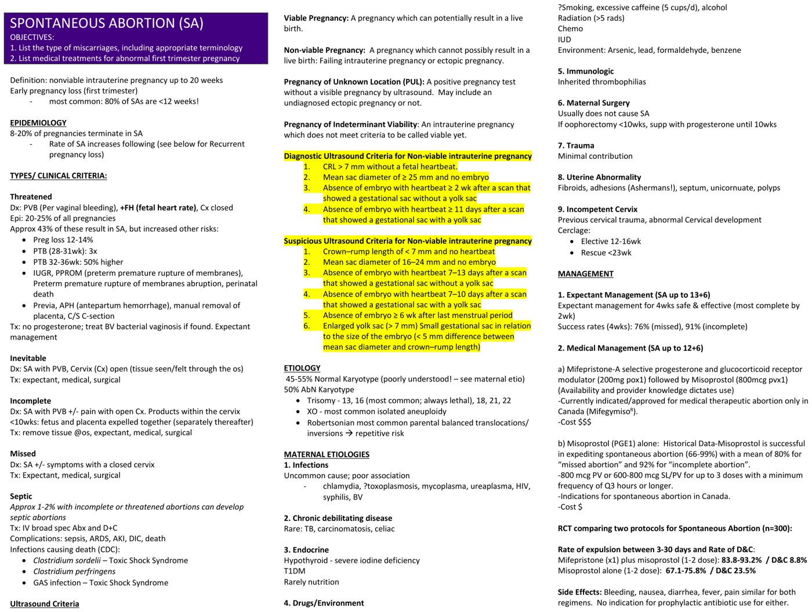
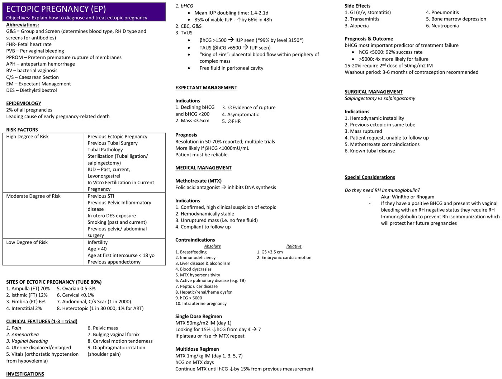

Early Pregnancy Complications
Spontaneous Abortion and Ectopic Pregnancy
- Any bleeding or pain in early pregnancy: β-hCG, then ultrasound. The question you are answering is where is it, and is it viable — in that order.
- Spontaneous abortion = a non-viable intrauterine pregnancy up to 20 weeks. It affects 8–20% of pregnancies, and 80% happen before 12 weeks.
- The five types are defined by the cervix and what's left inside: threatened (closed, fetal heart present) · inevitable (open) · incomplete (open, products retained) · missed (closed, no heartbeat) · septic (infected).
- About 50% of losses have an abnormal karyotype. Trisomy 16 is the most common and always lethal; 45,X is the most common single aneuploidy.
- Three ways to manage a miscarriage: expectant, medical (mifepristone + misoprostol beats misoprostol alone), surgical (D&C, 95–100% successful, ~1% serious morbidity).
- Ectopic is 2% of pregnancies but the leading cause of early pregnancy-related death. 80% are tubal, and 70% of those are in the ampulla.
- Above a β-hCG of 1500 you should see an intrauterine pregnancy on TVUS (99% by 3150). If you don't, think ectopic.
- Methotrexate needs four things: confirmed/strongly suspected ectopic · haemodynamically stable · unruptured, no free fluid · will come back for follow-up. hCG >5000 is a contraindication and predicts failure.
- Rh-negative + positive β-hCG + bleeding = Rh immunoglobulin. Protects her future pregnancies.
Learning Objectives
- List the types of miscarriage, including appropriate terminology.
- List medical treatments for an abnormal first trimester pregnancy.
- Explain how to diagnose and treat ectopic pregnancy.
Unlike the rest of Tuesday, this is not a recorded lecture. The module is two reference documents by Dr. Laura Sovran, plus instructions. Its own guidance is worth quoting:
On the spontaneous abortion document: you are not expected to memorize the ultrasound criteria — they are there as a future resource. What you are expected to take away is that there are different ways we categorize spontaneous abortions, some sense of cause, and the difference between expectant, medical and surgical management.
On the ectopic document: it is preparation for the synchronous session, where you will discuss risk identification, diagnosis and management. That session is Tuesday at 3:30pm. So this page is homework for a class discussion, not a lecture to absorb passively.
Spontaneous Abortion
Definitions, types, causes, management.
Definitions and Epidemiology
- Spontaneous abortion (SA): a non-viable intrauterine pregnancy up to 20 weeks.
- Early pregnancy loss = first trimester, and it is by far the most common: 80% of SAs occur before 12 weeks.
- 8–20% of pregnancies end in spontaneous abortion.
| Ultrasound term | Means |
|---|---|
| Viable pregnancy | Can potentially result in a live birth |
| Non-viable pregnancy | Cannot possibly result in a live birth — a failing intrauterine pregnancy or an ectopic |
| Pregnancy of unknown location (PUL) | A positive pregnancy test with no pregnancy visible on ultrasound. May or may not be an undiagnosed ectopic |
| Pregnancy of indeterminate viability | An intrauterine pregnancy that doesn't yet meet criteria to be called viable |
PUL is the one to be careful with. It is not a reassuring result — it is an unfinished one, and an ectopic is still on the table until you have located the pregnancy.
The Five Types
Two questions sort almost all of them: is the cervix open or closed? and is there still a fetal heart / are there retained products?
| Type | Cervix | Diagnosis | Treatment |
|---|---|---|---|
| Threatened | Closed | Vaginal bleeding + fetal heart present, cervix closed | Expectant. No progesterone. Treat BV if found |
| Inevitable | Open | Bleeding with an open cervix — tissue seen or felt through the os | Expectant, medical or surgical |
| Incomplete | Open | Bleeding ± pain, open cervix, products within the cervix | Remove tissue at the os; then expectant, medical or surgical |
| Missed | Closed | Non-viable pregnancy ± any symptoms at all, cervix closed | Expectant, medical or surgical |
| Septic | — | Infected — complicates 1–2% of incomplete or threatened abortions | IV broad-spectrum antibiotics + D&C |
It occurs in 20–25% of all pregnancies, and roughly 43% go on to miscarry. But even the ones that continue carry increased risk later in the pregnancy:
Pregnancy loss 12–14% · preterm birth at 28–31 weeks: 3× · preterm birth at 32–36 weeks: 50% higher · IUGR, PPROM, abruption, perinatal death · previa, antepartum haemorrhage, manual removal of placenta, caesarean section.
So "threatened abortion, went home, pregnancy continued" is a reason to watch that pregnancy more closely, not to close the file.
Septic abortion kills. Complications are sepsis, ARDS, acute kidney injury, DIC and death. The organisms the CDC associates with deaths are Clostridium sordellii (toxic shock), Clostridium perfringens, and group A streptococcus (toxic shock).
Ultrasound Criteria
The module explicitly says you don't need to memorize these — but you should understand the split. "Diagnostic" means you can call it non-viable now. "Suspicious" means repeat the scan.
| Diagnostic of a non-viable IUP | Suspicious for a non-viable IUP |
|---|---|
| CRL >7 mm with no fetal heartbeat | CRL <7 mm with no heartbeat |
| Mean sac diameter ≥25 mm with no embryo | Mean sac diameter 16–24 mm with no embryo |
| No embryo with heartbeat ≥2 weeks after a scan showing a sac without a yolk sac | No embryo with heartbeat 7–13 days after a scan showing a sac without a yolk sac |
| No embryo with heartbeat ≥11 days after a scan showing a sac with a yolk sac | No embryo with heartbeat 7–10 days after a scan showing a sac with a yolk sac |
| — | No embryo ≥6 weeks after LMP |
| — | Enlarged yolk sac (>7 mm); or a small sac relative to the embryo (<5 mm difference between MSD and CRL) |
The pattern: the same findings, just earlier or smaller, move from "diagnostic" to "suspicious." The thresholds exist to make sure nobody terminates a wanted, viable pregnancy that was simply dated wrong.
Why It Happens
| Category | Share | Detail |
|---|---|---|
| Abnormal karyotype | 50% | Trisomy 13, 16, 18, 21, 22 — 16 is the most common and is always lethal. 45,X (Turner) is the most common isolated aneuploidy. Robertsonian translocations are the commonest parental balanced translocations, and carry a repetitive risk |
| Normal karyotype | 45–55% | Poorly understood — look to the maternal causes below |
| Maternal cause | Detail |
|---|---|
| Infection | Uncommon, poor association. Chlamydia, ?toxoplasmosis, mycoplasma, ureaplasma, HIV, syphilis, BV |
| Chronic debilitating disease | Rare — TB, carcinomatosis, celiac |
| Endocrine | Hypothyroidism (severe iodine deficiency), type 1 diabetes, rarely nutrition |
| Drugs / environment | ?Smoking, excessive caffeine (5 cups/day), alcohol, radiation >5 rads, chemotherapy, IUD. Environmental: arsenic, lead, formaldehyde, benzene |
| Immunologic | Inherited thrombophilias |
| Maternal surgery | Usually does not cause SA. If oophorectomy before 10 weeks, supplement progesterone until 10 weeks |
| Trauma | Minimal contribution |
| Uterine abnormality | Fibroids, adhesions (Asherman's), septum, unicornuate uterus, polyps — see 3.7 |
| Incompetent cervix | Previous cervical trauma or abnormal cervical development. Cerclage: elective at 12–16 weeks, rescue before 23 weeks |
Half of early losses are chromosomal accidents, and of the causes that remain, trauma contributes minimally and surgery usually doesn't cause it. Patients very often believe they did something to cause the miscarriage. The evidence is mostly on your side when you tell them they didn't.
Management: The Three Options
| Mifepristone + misoprostol | Misoprostol alone | |
|---|---|---|
| Regimen | Mifepristone 200 mg PO × 1, then misoprostol 800 µg PV × 1 | 800 µg PV, or 600–800 µg SL/PV, up to 3 doses, minimum q3h |
| Expulsion (3–30 days) | 83.8–93.2% | 67.1–75.8% |
| Ended up needing D&C | 8.8% | 23.5% |
| Canadian indication | Currently approved for medical therapeutic abortion only (Mifegymiso) — so this is off-label for miscarriage | Indicated for spontaneous abortion in Canada |
| Cost | $$$ | $ |
- Side effects are the same for both: bleeding, nausea, diarrhoea, fever, pain. No prophylactic antibiotics are indicated for either.
- Historical data for misoprostol alone: successful in 66–99%, mean 80% for missed and 92% for incomplete abortion.
- Availability and provider knowledge dictate use — the handout's own phrase, and an honest one.
Adding mifepristone roughly cuts the D&C rate from ~24% to ~9%. It costs much more and is off-label for this indication in Canada. That is the actual decision. Same two drugs as induced abortion — see 4.1 — used for a different reason.
Ectopic Pregnancy
The one that kills. Prepare this part for the 3:30pm session.
Epidemiology and Risk Factors
- 2% of all pregnancies.
- The leading cause of early pregnancy-related death.
| High risk | Moderate risk | Low risk |
|---|---|---|
| Previous ectopic · previous tubal surgery · tubal pathology · sterilization (tubal ligation/salpingectomy) · IUD (past, current, levonorgestrel) · IVF in the current pregnancy | Previous STI · previous PID · in utero DES exposure · smoking (past and current) · previous pelvic/abdominal surgery | Infertility · age >40 · age at first intercourse <18 · previous appendectomy |
Look at what dominates the high and moderate columns: anything that damages the tube. Previous ectopic, tubal surgery, tubal pathology — and then previous STI and previous PID.
That is the same chain you followed on 4.6: untreated chlamydia → PID → tubal scarring → infertility and ectopic pregnancy. This page is the far end of that story.
The IUD entry is a common exam trap. An IUD massively reduces your absolute risk of any pregnancy. But if you conceive with one in place, that pregnancy is more likely to be ectopic.
Where They Implant
| Site | Share |
|---|---|
| Ampulla (tube) | 70% |
| Isthmus (tube) | 12% |
| Fimbria (tube) | 6% |
| Interstitial | 2% |
| Ovarian | 0.5–3% |
| Cervical | <0.1% |
| Abdominal, caesarean scar | 1 in 2000 |
| Heterotopic (one intrauterine and one ectopic) | 1 in 30,000 — but 1% with assisted reproduction |
The tube accounts for 80% overall, and the ampulla alone for 70%. Heterotopic pregnancy is the trap in an IVF patient: finding an intrauterine pregnancy normally reassures you — but at a 1% rate with ART, it no longer rules out a simultaneous ectopic.
Clinical Features
1. Pain · 2. Amenorrhea · 3. Vaginal bleeding
- Uterus displaced or enlarged
- Orthostatic hypotension from hypovolemia — the vital sign that says she is bleeding
- Pelvic mass; bulging vaginal fornix
- Cervical motion tenderness — the same chandelier sign as PID (4.6), which is exactly why the pregnancy test comes first
- Diaphragmatic irritation → shoulder tip pain — blood tracking up to irritate the diaphragm. Shoulder pain in a woman of reproductive age with abdominal pain is a red flag.
Investigations
| Test | What you're looking for |
|---|---|
| β-hCG | Mean doubling time in a normal IUP is 1.4–2.1 days; 85% of viable IUPs rise by 66% in 48 h. A slow or plateauing rise is suspicious |
| CBC, group and screen | Haemoglobin, and her Rh status — which determines whether she needs Rh immunoglobulin |
| TVUS | Above β-hCG 1500 you should see an IUP (99% by 3150). Transabdominal needs >6500. Look for the "ring of fire" — placental blood flow around a complex adnexal mass — and for free fluid |
The discriminatory zone is the concept to hold. A β-hCG above ~1500 with an empty uterus is not a reassuring scan — it is a scan that should make you think ectopic.
Management
Expectant
| Indications (all four) | Prognosis |
|---|---|
| Declining β-hCG and β-hCG <200 · mass <3.5 cm · no evidence of rupture · asymptomatic · no fetal heart | Resolution in 50–70%. More likely if β-hCG <1000 mIU/mL. The patient must be reliable |
Medical — Methotrexate
Methotrexate is a folic acid antagonist — it inhibits DNA synthesis, so it targets the rapidly dividing trophoblast.
| Indications (all four) |
|---|
| 1. Confirmed or high clinical suspicion of ectopic · 2. Haemodynamically stable · 3. Unruptured mass — no free fluid · 4. Compliant with follow-up |
| Absolute contraindications | Relative |
|---|---|
| Breastfeeding · immunodeficiency · liver disease & alcoholism · blood dyscrasias · MTX hypersensitivity · active pulmonary disease (e.g. TB) · peptic ulcer disease · hepatic/renal/haematologic dysfunction · hCG >5000 · intrauterine pregnancy | Gestational sac >3.5 cm · embryonic cardiac motion |
| Regimen | Dose | Monitoring |
|---|---|---|
| Single dose | MTX 50 mg/m² IM on day 1 | Looking for a 15% fall in hCG from day 4 to day 7. Plateau or rise → repeat MTX |
| Multidose | MTX 1 mg/kg IM on days 1, 3, 5, 7 | hCG on MTX days; continue until hCG falls 15% from the previous measurement |
- Side effects: GI (nausea, vomiting, stomatitis) · transaminitis · alopecia · pneumonitis · bone marrow depression · neutropenia.
- β-hCG is the most important predictor of treatment failure. hCG <5000: 92% success. >5000: 4× more likely to fail.
- 15–20% need a second dose of 50 mg/m² IM.
- Washout period: 3–6 months of contraception recommended afterwards — methotrexate is a folate antagonist and therefore teratogenic. Do not skip this in counselling.
Surgical
Salpingectomy (remove the tube) vs salpingostomy (open it, remove the pregnancy, leave the tube).
| Indications for surgery |
|---|
| 1. Haemodynamic instability · 2. Previous ectopic in the same tube · 3. Ruptured mass · 4. Patient request, or unable to follow up · 5. Methotrexate contraindications · 6. Known tubal disease |
Unstable or ruptured → surgery. No debate.
Stable, unruptured, low hCG, reliable follow-up → methotrexate.
Declining hCG already below 200, asymptomatic → you can watch.
Notice that "compliant with follow-up" appears in both the expectant and medical lists. Both strategies depend entirely on her coming back — and the consequence of not coming back is rupture. That makes it a clinical criterion, not an administrative one.
Rh Immunoglobulin
Positive β-hCG + vaginal bleeding + Rh negative = give Rh immunoglobulin (WinRho, RhoGAM).
It prevents Rh isoimmunization, which protects her future pregnancies. It does nothing for the current one — which is exactly why it is easy to forget in the middle of managing a miscarriage or an ectopic.
The Original Documents
Both reference documents, as provided. The spontaneous abortion document is the one whose highlighted section the module flags as clinically relevant for obstetricians, gynecologists, family physicians and emergency physicians — a resource for clerkship rather than something to memorize now.


Built from the "Early Pregnancy Complications: Spontaneous Abortion and Ectopic Pregnancy" module (60 min) and its two reference documents by Dr. Laura Sovran. This module has no recorded lecture — it is two documents plus instructions, so everything here comes directly from those documents, and there is no transcript to cross-check against. Every figure, threshold and regimen above is reproduced from them; where the handouts use shorthand, it has been expanded. One note: the spontaneous abortion document refers the reader to a section on recurrent pregnancy loss ("see below"), but no such section appears in the file as distributed — recurrent loss is instead covered on 4.2. The ectopic document is explicitly preparation for the Tuesday 3:30pm integrative session on ectopic pregnancy. Related pages: 4.6 for the PID–tubal damage chain, 4.1 for mifepristone and misoprostol used for induced abortion, and 4.2 for recurrent pregnancy loss.